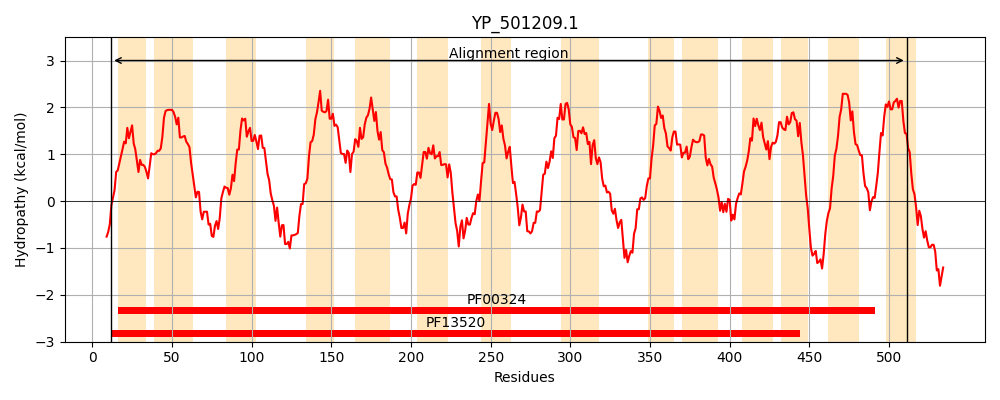
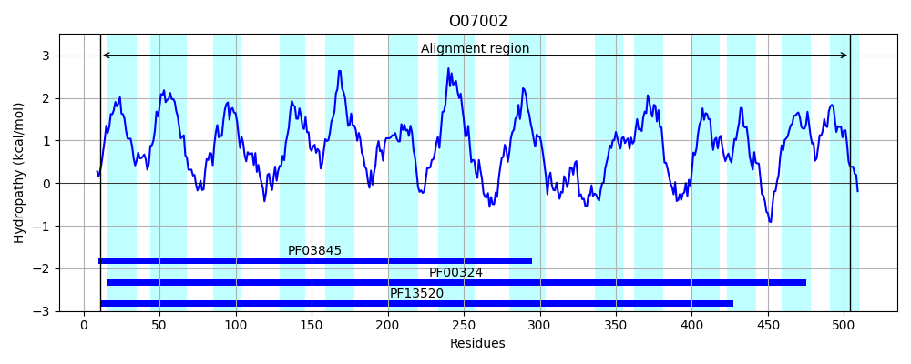
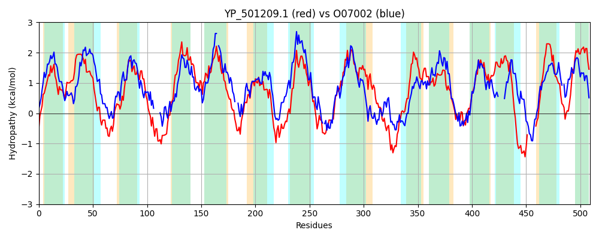

Hit Accession: O07002
Hit TCID: 2.A.3.11.1
Hit Description: gnl|BL_ORD_ID|6782 gnl|TC-DB|O07002|2.A.3.11.1 Hypothetical protein yvea - Bacillus subtilis.
Mach Len: 509
e:0.000000
Query TMS Count : 14
Hit TMS Count: 14
TMS-Overlap Score: 10.650000
Predicted Substrates:CHEBI:29987;glutamate(2-), CHEBI:29995;aspartate(2-)
BLAST Alignment:
Score: 762 , Bit scores: 298 bits, E-value: 9.2e-95, Alignment length: 509, Percentage identity: 33
Query: 12 INLSQLVLLGLGSLIGSGWLFGAWEASSIAGPAAIISWVLGFLVIGTIAYNYIEIGTMFPQSGGMSNYAQYTHGSLLGFIAAWANWVSLVTIIPIEAVSAVQYMSSWPWHWAKPMRYLMENGSISTYGLLAVYLIIVIFSLLNYWSVKLLTSFTSLISVFKLGVPMLTIIMLMLSGFDTSNYGHSASTFMPYGSAPIFAATTASGIIFSFNSFQTIINMGSEIKNPEKNIARGIAISLSISAVLYIILQSTFITSMPQSMLQHSGWNGIN--FNSPFADLAILLGINWLAILLYIEAFVSPFGTGVSFVAVTGRVLRAMEKNGHIPKFLGKMNEKYHIPRVAIIFNAIISMIMVTLFRDWGTLAAVISTATLVAYLTGPTTVIALRKMGPTMTRPFRAKILKVMAPLSFVLASLAIYWAMWPTTAEVILIIILGLPIYFFYEYRMNWRNTKK-------QIGGSLWIIVYLIVLSILSFIGSKEFKGLNMIHYPFDFIVIIIVALIFYY 511
++L L+L+G+G++ GS WLF +S AGP+ SW+LG +I I Y E+G P++GG+ Y Y+HG L+G++ ++ V+ ++I IE + QY++ W P + + S + G + + ++ +F LLNYWSVK +IS+FK VP +TII++++ F N S F P+G I AA + G++F++ I+++ E++NP++NI + I + +S ++Y +LQ TFI ++P L+H GW I F+ PF D+A++LG+ WLA L+ ++A +SP G G F+ T R++ A +NG + K+N+ PR ++ + +S+ F W L V S A +++Y P + ALR + RPF K + ++ PLSF+ + +YW+ W T + +LG + F Y + T K Q+ + W+I + I++ I S+IGS GL +I P D I++ I +L YY
Sbjct: 11 MSLFDLILIGMGAIFGSAWLFAVSNVASKAGPSGAFSWILGGAIILLIGLVYAELGAALPRTGGIIRYPVYSHGHLVGYLISFVTIVAYTSLISIEVTAVRQYVAYW-----FPGLTIKGSDSPTISGWILQFALLCLFFLLNYWSVKTFAKANFIISIFKYIVP-ITIIIVLIFHFQPENL--SVQGFAPFGFTGIQAAISTGGVMFAYLGLHPIVSVAGEVQNPKRNIPIALIICIIVSTIIYTVLQVTFIGAIPTETLKH-GWPAIGREFSLPFKDIAVMLGLGWLATLVILDAILSPGGNGNIFMNTTSRLVYAWARNGTLFGIFSKVNKDTGTPRASLWLSFALSIFWTLPFPSWNALVNVCSVALILSYAIAPISSAALRVNAKDLNRPFYLKGMSIIGPLSFIFTAFIVYWSGWKTVS-----WLLGSQLVMFLIYLCFSKYTPKEDVSLAQQLKSAWWLIGFYIMMLIFSYIGSFG-HGLGIISNPVDLILVAIGSLAIYY 504 | Protein Hydropathy Plots: |
|---|
|  |  |
Pairwise Alignment-Hydropathy Plot:
|
|---|
|  |